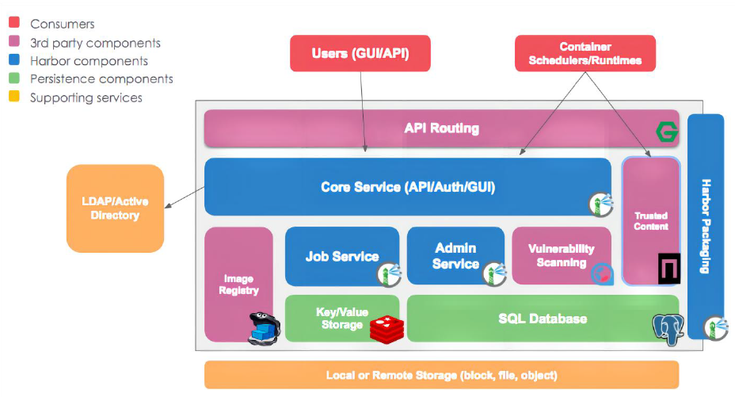
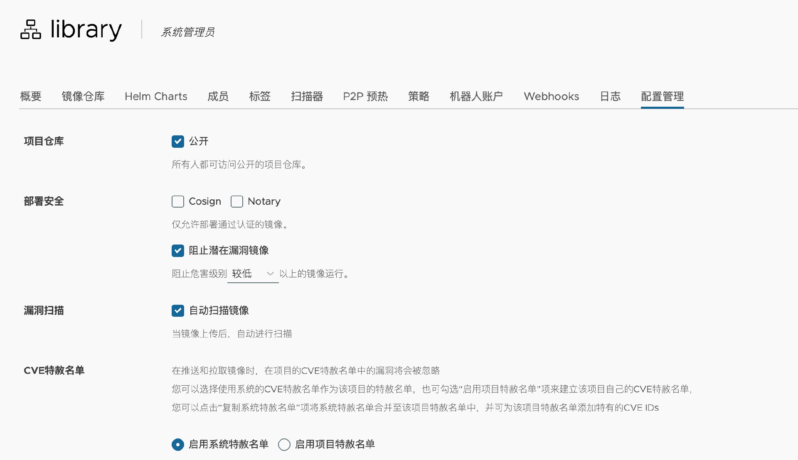
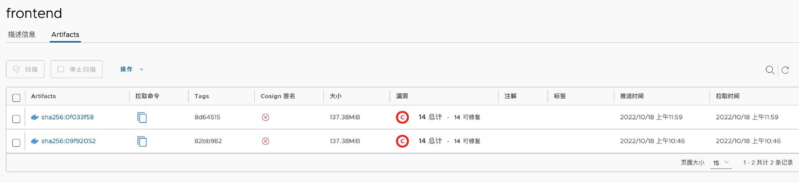
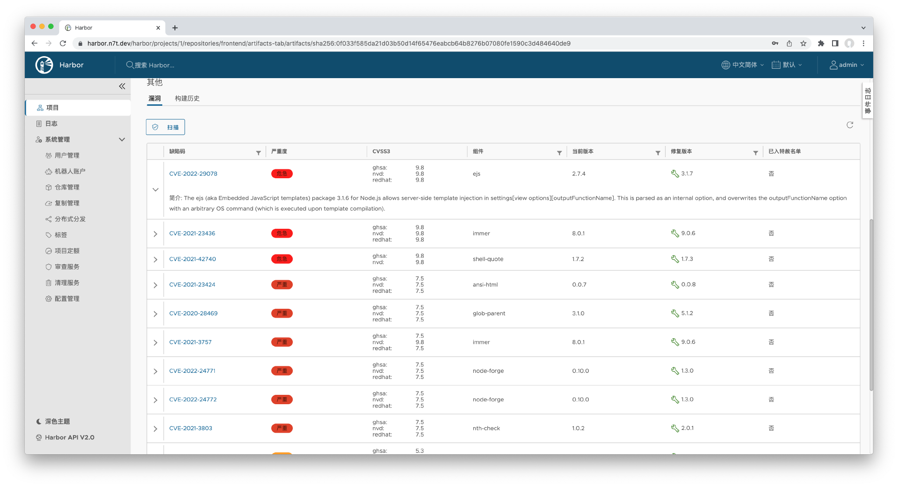

Docker Registry和harbor镜像仓库简介、高可用机制、部署自签名的harbor镜像仓库并实现镜像统一分发
部分镜像仓库：
常见的公有镜像仓库：
Docker官方的镜像仓库：https://hub.docker.com
实际上，Docker Hub 也是一个收费的服务，对于免费用户来说，它限制每 6 小时最多拉取 200 次镜像，显然，这对团队来说是完全不够用的。
阿里云镜像仓库： https://cr.console.aliyun.com
Google镜像仓库： https://console.cloud.google.com/gcr/images/google-containers/GLOBAL
红帽镜像仓库：https://quay.io/search
商业镜像仓库：
AWS: https://aws.amazon.com/cn/ecr/#
阿里云: https://cr.console.aliyun.com
Google镜像仓库： https://console.cloud.google.com/gcr/images/google-containers/GLOBAL
常见的私有自建镜像仓库：
Docker Registry：https://github.com/distribution/distribution
harbor：
https://github.com/goharbor/harbor
harbor
harbor 简介：
Harbor是一个用于存储和分发Docker镜像的企业级Registry服务器，由vmware开源，在Docker Registry的基础至上添加了一些企业必需的功能特性，例如安全认证、镜像扫描和镜像管理、远程镜像复制等，扩展了开源的Docker Distribution的功能，作为一个企业级的私有Registry服务器，Harbor提供了更好的性能和安全，提升了用户使用Registry分发镜像镜像的效率，Harbor支持安装在多个Registry节点以实现镜像资源夸主机复制、从而实现镜像服务的高可用和镜像数据的安全，另外将镜像全部保存在私有网络的Registry中， 也可以确保代码数据和密码配置等信息仅在公司内部网络中传输，从而保证核心数据的安全性。
- harbor官方网址：
- https://goharbor.io/
- arbor官方github地址：
- https://github.com/vmware/harbor
- vmware官方开源服务列表地址：
- https://vmware.github.io/harbor/cn
harbor 的优势：
- 基于角色的访问控制：用户与Docker镜像仓库通过“项目”进行项目管理，可以对不同的账户设置不同的权限，以实现权限的精细管控。
- 镜像复制：镜像可以在多个 Registry 实例中复制（同步），可以实现高性能、高可用的镜像服务。
- 图形化用户界面：用户可以通过浏览器来浏览，管理当前Docker镜像仓库，管理项目和镜像等。
- AD/LDAP 支：Harbor可以集成企业内部已有的AD/LDAP，用于鉴权认证管理。
- 审计管理：所有针对镜像仓库的操作都可以被记录追溯，用于审计管理。
- 国际化：已拥有英文、中文、德文、日文和俄文等多语言支持版本。
- RESTful API：提供给管理员对于Harbor更多的操控, 使得与其它管理软件集成变得更容易。
- 部署简单：提供在线和离线两种安装工具， 也可以安装到vSphere平台(OVA方式)虚拟设备。
harbor 组件简介：
- Core Service：基于nginx实现的harbor反向代理组件，用于接受客户端请求，代理会转发harbor web和docker client的各种请求到后端服务上。
- Admin Service：harbor系统管理接口，可以修改系统配置以及获取系统信息。
- Job Service：harbor里面主要是为了镜像仓库之前同步使用的。
- SQL Database：存储项目的元数据、用户、规则、复制策略等信息。
- Image Registry：存储docker images的服务，提供镜像读写请求服务。
- Redis：存储缓存信息。
- vulnerability scanning: 镜像漏洞扫描服务(基于红帽的clair实现，https://github.com/quay/clair?utm_source=thenewstack&utm_medium=website&utm_content=inlinemention&utm_campaign=platform)。
- trusted content：可信服务，用于验证镜像的数字签名信息，保证镜像的一致性(依赖于ssl实现)。

harbor 部署-http：
harbor 是通过 docker-compose 部署的，因此需要 docker 环境
http镜像仓库：
1、安装docker：
root@keti:~# cd /usr/local/src/
root@keti:/usr/local/src# tar xvf docker-20.10.18-binary-install.tar.gz
root@keti:/usr/local/src# bash docker-install.sh
2、安装harbor：
先下载离线安装包 https://github.com/goharbor/harbor/releases
上传到要安装 harbor 的服务器中
root@keti:~# mkdir /apps
root@keti:~# cd /apps/
root@keti:/apps# tar xvf harbor-offline-installer-v2.8.2.tgz
root@keti:/apps# cd harbor/
root@keti:/apps# cp harbor.yml.tmpl harbor.yml
root@keti:/apps/harbor# vim harbor.yml
修改域名
hostname: harbor.ketitx.com
修改端口和密码
http:
port: 5000 #因为跟gitlab冲突了，会提示
harbor_admin_password: Harbor12345
注释掉https的部分，或者添加证书
生成证书参考：https://blog.csdn.net/netconer/article/details/130888371
The default data volume
data_volume: /data # 修改了一下，但是有问题又改回来了。。
需要自己安装docker-compose
sudo curl -L "<https://github.com/docker/compose/releases/download/2.26.0/docker-compose-linux-$>(uname -m)" -o /usr/local/bin/docker-compose
sudo chmod +x /usr/local/bin/docker-compose
如果安装报错需要删除所有已经创建的容器
docker rm -f $(docker ps -aq)
root@keti:/apps/harbor# ./install.sh --with-trivy
[Step 0]: checking if docker is installed ...
Note: docker version: 20.10.19
[Step 1]: checking docker-compose is installed ...
Note: docker-compose version: 1.28.6
[Step 2]: loading Harbor images ...
Loaded image: goharbor/harbor-log:v2.8.2
Loaded image: goharbor/harbor-db:v2.8.2
Loaded image: goharbor/registry-photon:v2.8.2
Loaded image: goharbor/harbor-core:v2.8.2
Loaded image: goharbor/harbor-jobservice:v2.8.2
Loaded image: goharbor/harbor-registryctl:v2.8.2
Loaded image: goharbor/notary-signer-photon:v2.8.2
Loaded image: goharbor/trivy-adapter-photon:v2.8.2
Loaded image: goharbor/prepare:v2.8.2
Loaded image: goharbor/harbor-portal:v2.8.2
Loaded image: goharbor/redis-photon:v2.8.2
Loaded image: goharbor/harbor-exporter:v2.8.2
Loaded image: goharbor/nginx-photon:v2.8.2
Loaded image: goharbor/notary-server-photon:v2.8.2
[Step 3]: preparing environment ...
[Step 4]: preparing harbor configs ...
prepare base dir is set to /apps/harbor
WARNING:root:WARNING: HTTP protocol is insecure. Harbor will deprecate http protocol in the future. Please make sure to upgrade to https
Clearing the configuration file: /config/db/env
Clearing the configuration file: /config/core/env
Clearing the configuration file: /config/core/app.conf
Clearing the configuration file: /config/registry/passwd
Clearing the configuration file: /config/registry/config.yml
Clearing the configuration file: /config/registry/root.crt
Clearing the configuration file: /config/registryctl/env
Clearing the configuration file: /config/registryctl/config.yml
Clearing the configuration file: /config/portal/nginx.conf
Clearing the configuration file: /config/nginx/nginx.conf
Clearing the configuration file: /config/log/rsyslog_docker.conf
Clearing the configuration file: /config/log/logrotate.conf
Clearing the configuration file: /config/jobservice/env
Clearing the configuration file: /config/jobservice/config.yml
Clearing the configuration file: /config/trivy-adapter/env
Generated configuration file: /config/portal/nginx.conf
Generated configuration file: /config/log/logrotate.conf
Generated configuration file: /config/log/rsyslog_docker.conf
Generated configuration file: /config/nginx/nginx.conf
Generated configuration file: /config/core/env
Generated configuration file: /config/core/app.conf
Generated configuration file: /config/registry/config.yml
Generated configuration file: /config/registryctl/env
Generated configuration file: /config/registryctl/config.yml
Generated configuration file: /config/db/env
Generated configuration file: /config/jobservice/env
Generated configuration file: /config/jobservice/config.yml
loaded secret from file: /data/secret/keys/secretkey
Generated configuration file: /config/trivy-adapter/env
Generated configuration file: /compose_location/docker-compose.yml
Clean up the input dir
Note: stopping existing Harbor instance ...
Removing network harbor_harbor
[Step 5]: starting Harbor ...
Creating network "harbor_harbor" with the default driver
Creating harbor-log ... done
Creating registryctl ... done
Creating harbor-db ... done
Creating harbor-portal ... done
Creating registry ... done
Creating redis ... done
Creating harbor-core ... done
Creating trivy-adapter ... done
Creating harbor-jobservice ... done
Creating nginx ... done
✔ ----Harbor has been installed and started successfully.----
root@keti:/apps/harbor#
root@keti:/apps/harbor# docker ps
CONTAINER ID IMAGE COMMAND CREATED STATUS PORTS NAMES
cf96ed2664e7 goharbor/nginx-photon:v2.8.2 "nginx -g 'daemon of…" 55 seconds ago Up 54 seconds (healthy) 0.0.0.0:5000->8080/tcp, :::5000->8080/tcp nginx
4947c43b26c7 goharbor/harbor-jobservice:v2.8.2 "/harbor/entrypoint.…" 55 seconds ago Up 50 seconds (healthy) harbor-jobservice
182ae23f6d14 goharbor/trivy-adapter-photon:v2.8.2 "/home/scanner/entry…" 57 seconds ago Up 55 seconds (healthy) trivy-adapter
dcc240535ade goharbor/harbor-core:v2.8.2 "/harbor/entrypoint.…" 57 seconds ago Up 55 seconds (healthy) harbor-core
cc71b0d89e24 goharbor/redis-photon:v2.8.2 "redis-server /etc/r…" 58 seconds ago Up 56 seconds (healthy) redis
578cf008e3b0 goharbor/harbor-db:v2.8.2 "/docker-entrypoint.…" 58 seconds ago Up 56 seconds (healthy) harbor-db
931359baa26d goharbor/registry-photon:v2.8.2 "/home/harbor/entryp…" 58 seconds ago Up 56 seconds (healthy) registry
fd3a8fc2f170 goharbor/harbor-registryctl:v2.8.2 "/home/harbor/start.…" 58 seconds ago Up 57 seconds (healthy) registryctl
b58654a67f9b goharbor/harbor-portal:v2.8.2 "nginx -g 'daemon of…" 58 seconds ago Up 56 seconds (healthy) harbor-portal
afdb8f8084f9 goharbor/harbor-log:v2.8.2 "/bin/sh -c /usr/loc…" 59 seconds ago Up 58 seconds (healthy) 127.0.0.1:1514->10514/tcp harbor-log
root@keti:/apps/harbor#
helm 安装 Harbor
前提：安装 cert-manager
首先添加 Harbor 官方仓库。
$ helm repo add harbor https://helm.goharbor.io
"harbor" has been added to your repositories
然后，更新本地 Helm 缓存。
$ helm repo update
...Successfully got an update from the "jetstack" chart repository
...Successfully got an update from the "harbor" chart repository
接下来，由于我们需要定制化安装 Harbor，所以需要修改 Harbor 的安装参数，将下面的内容保存为 values.yaml。
expose:
type: ingress
tls:
enabled: true
certSource: secret
secret:
secretName: "harbor-secret-tls"
notarySecretName: "notary-secret-tls"
ingress:
hosts:
core: harbor.n7t.dev
notary: notary.n7t.dev
className: nginx
annotations:
kubernetes.io/tls-acme: "true"
persistence:
persistentVolumeClaim:
registry:
size: 20Gi
chartmuseum:
size: 10Gi
jobservice:
jobLog:
size: 10Gi
scanDataExports:
size: 10Gi
database:
size: 10Gi
redis:
size: 10Gi
trivy:
size: 10Gi
注意，由于腾讯云的 PVC 最小 10G 起售，所以，除了 registry 的容量以外，我将安装参数中其他的持久化卷容量都配置为了 10G，你可以根据安装集群的实际情况做调整。
另外，我还为 Harbor 配置了 ingress 访问域名，分别是 harbor.n7t.dev 和 notary.n7t.dev， 你需要将它们分别替换成你的真实域名。
然后，再通过 helm install 命令来安装 Harbor， **并指定参数配置文件 values.yaml**。
$ helm install harbor harbor/harbor -f values.yaml --namespace harbor --create-namespace
NAME: harbor
LAST DEPLOYED: Mon Oct 17 21:53:28 2022
NAMESPACE: harbor
STATUS: deployed
REVISION: 1
TEST SUITE: None
NOTES:
Please wait for several minutes for Harbor deployment to complete.
Then you should be able to visit the Harbor portal at https://core.harbor.domain
For more details, please visit https://github.com/goharbor/harbor
等待所有 Pod 处于就绪状态。
$ kubectl wait --for=condition=Ready pods --all -n harbor --timeout 600s
pod/cm-acme-http-solver-4v4zz condition met
pod/harbor-chartmuseum-79f49f5b4-8f4mb condition met
pod/harbor-core-6c6bc7fb4f-4822f condition met
pod/harbor-database-0 condition met
pod/harbor-jobservice-85d448d5c9-gn5pk condition met
pod/harbor-notary-server-848bcc7ccd-m5m5v condition met
pod/harbor-notary-signer-6897444589-6vssq condition met
pod/harbor-portal-588b64cbdb-gqlbn condition met
pod/harbor-redis-0 condition met
pod/harbor-registry-5c7d58c87c-6bgsj condition met
pod/harbor-trivy-0 condition met
到这里，Harbor 就已经安装完成了。
docker 使用 http harbor：
docker主机登录
1.配置主机名解析
root@keti:~# vim /etc/hosts
192.168.50.20 harbor.ketitx.com
2.docker 服务器配置仓库信任：
root@keti:~# vim /etc/docker/daemon.json
"insecure-registries": ["harbor.ketitx.com:端口号","harbor.myserver.com:端口号","192.168.0.102:端口号"],
root@docker-server1:~# systemctl restart docker
root@docker-server1:~# docker login harbor.ketitx.com:端口号
Username: admin
Password: xxxxxxxx # 输入 harbor 的密码
WARNING! Your password will be stored unencrypted in /root/.docker/config.json.
Configure a credential helper to remove this warning. See
<https://docs.docker.com/engine/reference/commandline/login/#credentials-store>
Login Succeeded
3.上传镜像：
root@keti:~# docker tag alpine:3.16.2 harbor.ketitx.com:端口号/pythonlearning/alpine:3.16.2
root@keti:~# docker push harbor.ketitx.com:端口号/pythonlearning/alpine:3.16.2
4.验证镜像下载:
配置域名解析及仓库信任
root@keti:~# docker pull harbor.ketitx.com:端口号/pythonlearning/alpine:3.16.2
harbor 部署-https：
见部署https的 harbor 服务器
开启自动镜像扫描和阻止漏洞镜像
由于Harbor 自带 Trivy 镜像扫描功能，可以帮助我们发现镜像的漏洞，并提供修复建议。因此在生产环境下，我推荐你开启“自动镜像扫描”和“阻止潜在漏洞镜像”功能，你可以进入项目的“配置管理”菜单开启它们。

开启“自动扫描镜像”功能后，所有推送到 Harbor 的镜像都会自动执行扫描，你可以进入镜像详情查看镜像漏洞数量。

进入“Artifacts”详情可以查看漏洞详情和修复建议。

开启“阻止潜在漏洞镜像”功能之后，接下来我们尝试在本地拉取 frontend 镜像，会发现 Harbor 阻止了这个行为。
$ docker pull harbor.n7t.dev/library/frontend:8d64515
Error response from daemon: unknown: current image with 14 vulnerabilities cannot be pulled due to configured policy in 'Prevent images with vulnerability severity of "Low" or higher from running.' To continue with pull, please contact your project administrator to exempt matched vulnerabilities through configuring the CVE allowlist.
阿里云镜像仓库
阿里云镜像仓库的使用：
- 注册账户
- https://cr.console.aliyun.com/
- 创建镜像仓库
- 构建镜像
- 指定镜像tag
- 登录镜像仓库
- 上传镜像
- 下载镜像
- 实现镜像分发